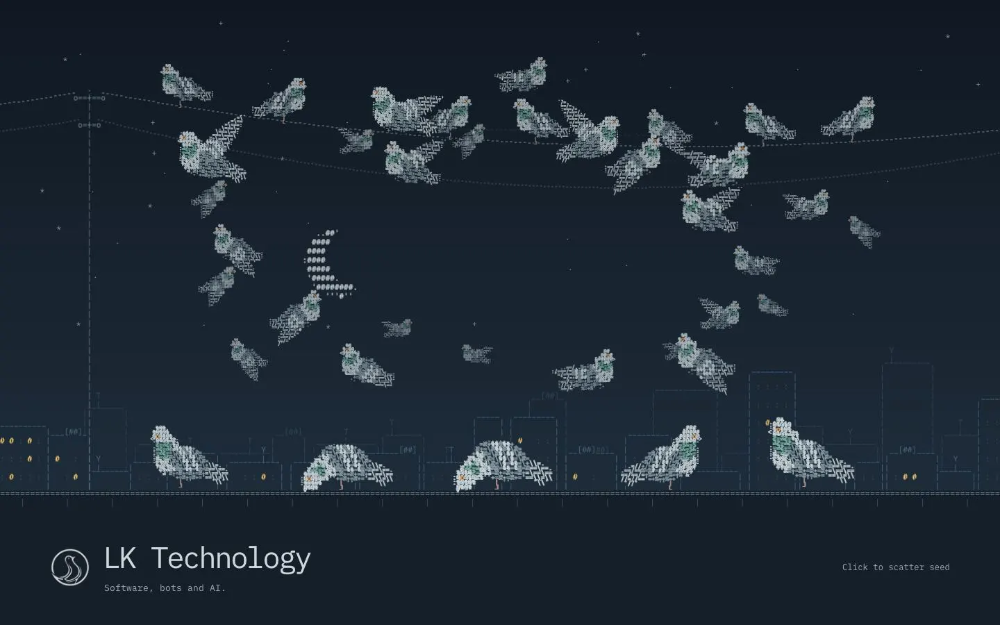
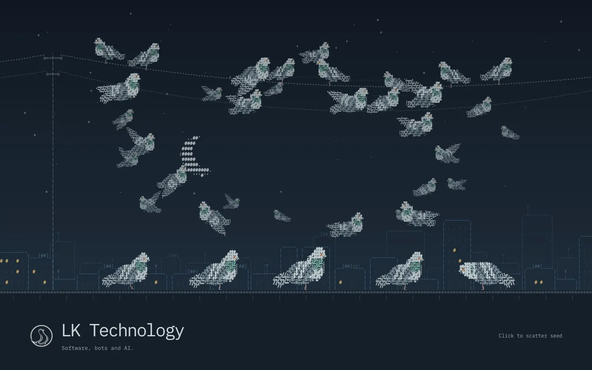

LK Technology
Software, bots and AI, under a flock of ASCII pigeons.
The landing page of LK Technology, a small software, bots and AI studio. The whole page is one night scene that visitors can poke at.
Visit lktechnology.in
Design decisions
- The only copy is the name, the line "Software, bots and AI." and a "Click to scatter seed" prompt, so the interaction is the pitch.
- Every pigeon, power line, moon and skyline is drawn from text characters, which ties the illustration to the code-first brand.
- Set in IBM Plex Mono throughout, with light grey text (#CDD8DB) on a deep navy ground (#151F29).
- Clicking scatters seed and the pigeons flock down and take off, so the page reads as a small toy before it reads as a company site.
On a phone

LK Technology has a single theme, so there is one set of captures.
The flow, step by step



Further down the page
